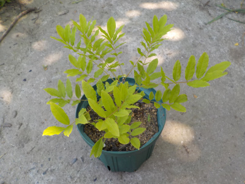
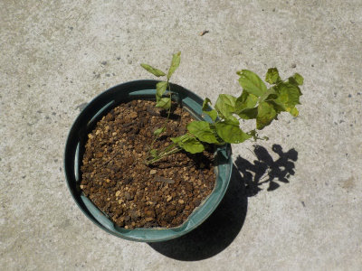
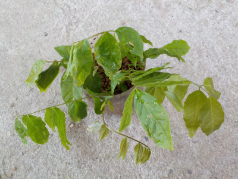

藤が全方向に広がってカッコイイ。
2022/05/22

藤はひょろひょろと何かに伝わりながら伸びるイメージがあったんですが、自立して育っています。
しばらく支柱を立てないで、このまま育ててみようと思います。
2022/05/22

藤はひょろひょろと何かに伝わりながら伸びるイメージがあったんですが、自立して育っています。
しばらく支柱を立てないで、このまま育ててみようと思います。
2021/07/03

ペットボトルの藤の挿し木で、発根が確認出来ました。
早速鉢に植え替えしました。
ひょろひょろしてるので、マメ科の雑草っぽい。
2021/05/09

自生している藤の木を挿木してみました。
藤の木は強いって効くので、簡単に挿木出来そうな気がしています。
花物は園芸品種の方がいいかもしれないですが、大きく育てるつもりはないので野生種で十分かなと思っています。
鉢植えで育てたいです。
まだ育つかどうか分からないですけど。
房が長いのは見事ですが、そうゆうのより山野草っぽいのが好きかな。